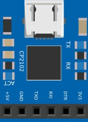

В данном материале представлены некоторые компоненты (детали) для использования в проектах Fritzing. Детали были пересобраны из других компонентов или построены с нуля.
Батарея/блок из трех элементов/аккумуляторов с форм-факторами AA или AAA - могут быть солевыми, щелочными, литиевыми.
Солевые. Это самый старый тип, впервые был сконструирован в 1907 году. Состоят из цинка, диоксида марганца и соли аммония, которая выступает в качестве электролита. Их плюс это относительно небольшой вес и низкая цена. Однако они плохо себя показывают при низких температурах, имеют склонность к саморазряду (по мере хранения теряют заряд), а энергоемкость у них самая низкая. Но это неплохой вариант для разового использования.
Щелочные (алкалиновые). Устроены аналогично солевым, но в качестве электролита тут выступает раствор щелочи (используется гидроксид калия). Саморазряд у них значительно меньше, при низких температурах они работаю лучше, энергоемкость значительно выше. Но они немного тяжелее и стоят дороже.
Литиевые. Могут быть разных типов, в плане состава электролита и минусового реагента, но для плюсового всегда будет использоваться литий. Это самый дорогой тип элементов. Но зато у них практически нет саморазряда, энергоемкость самая высокая, что и является ключевым преимуществом.
“Пальчиковые” - АА (самые распространенные в мире) имеют длину 50 мм и диаметр 14, “мизинчиковые” - ААA имеют длину 44.6 и диаметр 10.5 миллиметров.
Обычная усреднённая емкость для элементов АА составляет: солевые – 1000 мАч, щелочные – 1500 мАч, литиевые – 1250 мАч.
Для элементов AAA соответственно: солевые – 500, щелочные – 750, литиевые – 1200.
По сроку хранения - солевые допустимо хранить максимум до трех лет (с момента производства), щелочные до пяти, а литиевые до 12 лет, реже больше.
Пальчиковые аккумуляторы делят на литиевые (до 3000 мАч), щелочные (до 2800 мАч) и солевые (до 1500 мАч). Еще есть никель-кадмиевые, никель-цинковые и никель-металлгидридные.
Устройство используется, как программатор некоторых плат Arduino, и является модификацией USB-TTL UART с тем же функционалом, но изменённым типом и расположением контактов.
Характеристики:
Скорость обмена данными по UART 300 бит/сек — 1 Мбит/сек
Буферы: чтения 576 байт, записи 640 байт
Поддержка USB 2.0 12Мбит/сек
Встроенный стабилизатор питания 3.3В 100мА
EEPROM с конфигурационными параметрами 1024 байт
IRFZ24N является мощным n-канальным МОП (MOSFET) транзистором.
Максимальное напряжение сток-исток (Uси): 55В;
Максимальный продолжительный ток стока (Iс): 17А;
Максимальный импульсный ток стока (Iс): 68А;
Сопротивление открытого канала (Rси): 70мOм (0.07Ом);
Пороговое напряжение затвор-исток (UGS): 2... 4В;
Максимальное напряжение затвор-исток (Uзи): ±20В;
Корпус: ТО-220;
Модуль радиоприемника DSP PLL 87-108 МГц использует передовую технологию цифровой обработки аудиосигнала (DSP) и FM-модуляцию с фазовой автоподстройкой (PLL) для придания звуку большей реалистичности, более стабильных характеристик, длительного времени работы без смещения частоты.
ЖК-дисплей устройства с минимальным объёмом информации, но интуитивно понятен и точен, с очень низким энергопотреблением и минимальными шумовыми помехами.
Поддержка последовательных команд AT позволяет хорошо реализовать программное управление радиоприемником.
Стабилизация частоты кварцевого кристалла обеспечивает устойчивое удержание частоты при изменении температуры.
Выходная мощность: 500 МВт (проводные наушники)
Диапазон частот: 50 Гц-18 кГц
Канал: стерео
Эквивалентный уровень шума: ≥30 дБ
Напряжение питания: 3,0 В-5,0 В
Ток: 40 мА
USB-UART преобразователь предназначен для программирования Arduino Pro Mini и других контроллеров, а также позволяет получать информацию на компьютер со всего, что имеет последовательный интерфейс с TTL логикой.
Адаптер представляет из себя плату без корпуса на которой распаян чип CP2102 с небольшой обвязкой. С одной стороны находиться разъём USB, с другой 6 pin выводов: +3.3v, GND, +5v, TXD (TX), RXD (RX), DTR. На плате имеются монтажные отверстия с функциями DCD, D3R, RTS, CTS, SUS, SUS, R1, RST и 3 светодиода: первый - POWER (светится при подключении питания) и два для RX и TX (мигают во время приема-передачи данных).
Важная особенность в наличии вывода DTR, который можно напрямую подключить к входу RESET на контроллере не имеющем USB на плате (Arduino Pro Mini), что позволяет не нажимать RESET при программировании этого устройства.
Аналогичное устройство для программирования - CP2102 USB UART.